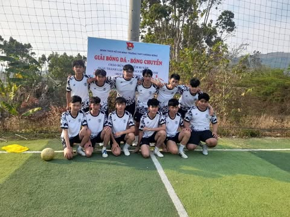
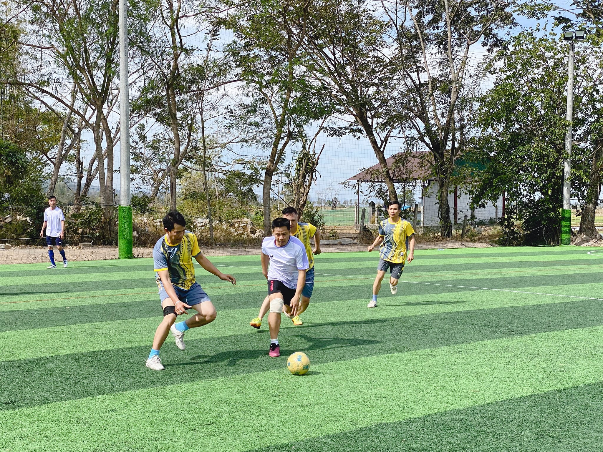

Hoạt động năng nổ và hiệu quả
Cháy hết mình trong các cuộc chơi
Giành những giải thưởng cao nhất
 |
 |
CLB bóng đáCLB bóng đá Trường THPT Krông Bông là hoạt động ngoại khóa nổi bật, thu hút nhiều học sinh yêu thích thể thao và tinh thần vận động. Câu lạc bộ tạo điều kiện cho học sinh rèn luyện thể lực, nâng cao sức bền và kỹ năng phối hợp đồng đội thông qua các buổi tập luyện thường xuyên. Không chỉ giúp giải tỏa căng thẳng sau giờ học, bóng đá còn rèn cho các thành viên tính kỷ luật, ý chí kiên trì và tinh thần thi đấu trung thực. Tham gia CLB, học sinh có cơ hội giao lưu, kết bạn và học cách hợp tác trong môi trường tập thể tích cực. Các trận giao hữu và hoạt động nội bộ góp phần xây dựng tinh thần đoàn kết, tự tin và bản lĩnh. CLB không chỉ là sân chơi thể thao mà còn là môi trường giúp học sinh phát triển toàn diện về thể chất, tinh thần và kỹ năng xã hội. | |